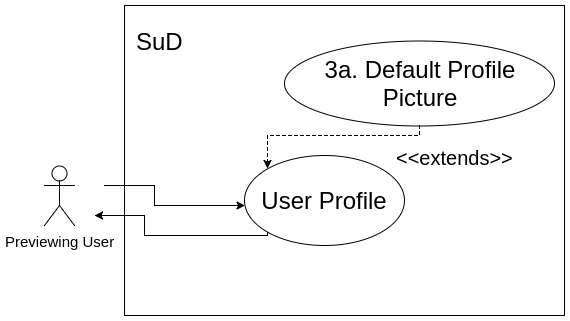

Title: User Profiles
Primary Actor: Previewing User
Stakeholders and Interests:
Previewing User - wants to view the profile of another user
Precondition: Previewing user is logged into the platform
Trigger: Previewing user clicks on the target user's name or profile picture, available
on one of the target user's posts
Main success scenario:
- Previewing user requests to see the profile of the target user
- Target user id is passed to the backend, and the user profile view is retrieved
- The user profile shows the profile picture, username, email and registration date of the target user
- Previewing user can click on a direct messaging button to chat with the user
- Upon such a click, launch the direct messaging use case
Extensions:

- 3a. Target user does not have a profile picture
- 3a1. Display the default user profile picture instead